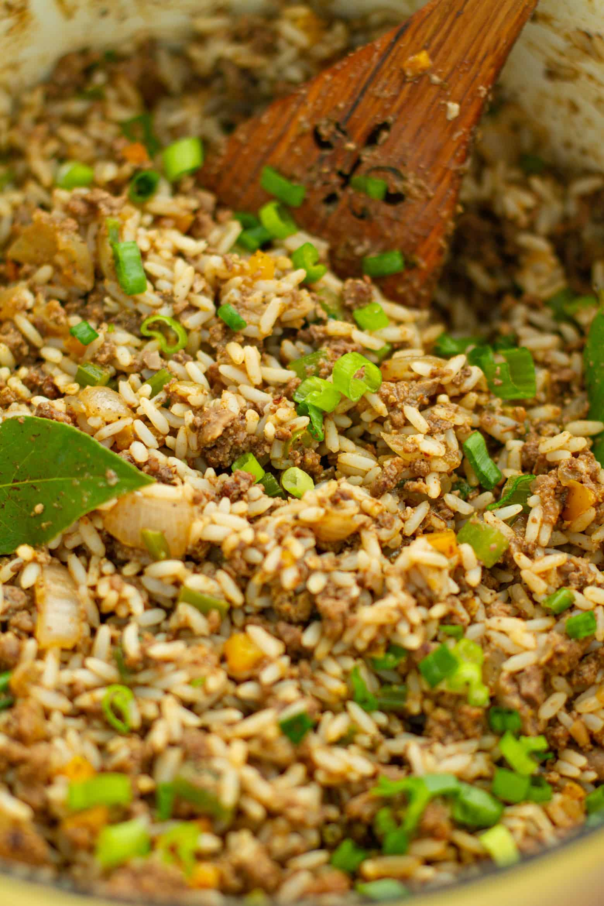

This is my Gran's dirty rice recipe that has been in the family as long as I can remember.
It is one of the biggest hits at our family holiday functions!
Gran's Dirty Rice
Ingredients
- Quarter lb chicken gizzards, rinsed
- Half lb chicken livers, rinsed and trimmed
- 1 tablespoon vegetable oil
- 1 onion, finely chopped
- 3 cloves garlic, minced
- 2 cups uncooked white rice
- 4 cups chicken broth
- Salt to taste
- Half teaspoon ground black pepper
- Quarter teaspoon cayenne pepper
- 1 cup thinly sliced green onion
Instructions
- Pulse gizzards in a food processor, then pulse the livers.
- Heat oil in a large saucepan.
- Saute onion and gizzards over medium heat, stirring constantly, until meat begins to brown, about 5 minutes.
- Add livers and garlic.
- Cook, stirring constantly, until brown, about 3 minutes.
- Add rice and stir until coated with oil.
- Add broth, salt, pepper, and cayenne and bring to a boil.
- Reduce heat to simmer, cover, and cook about 20 minutes, or until rice has absorbed the liquid.
- Sprinkle with green onion, serve, and enjoy!